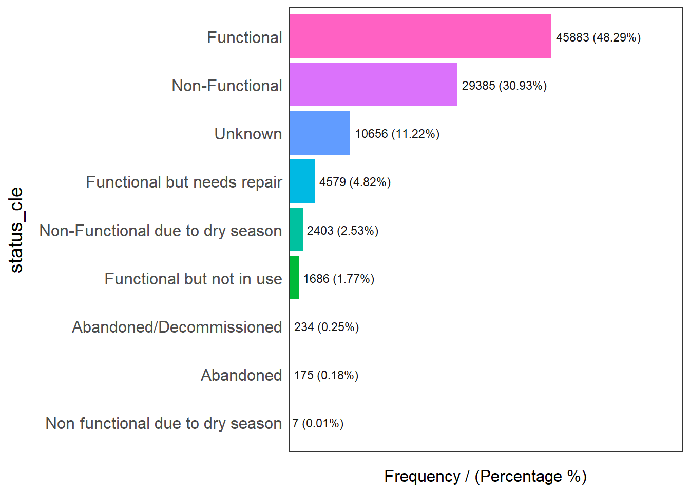
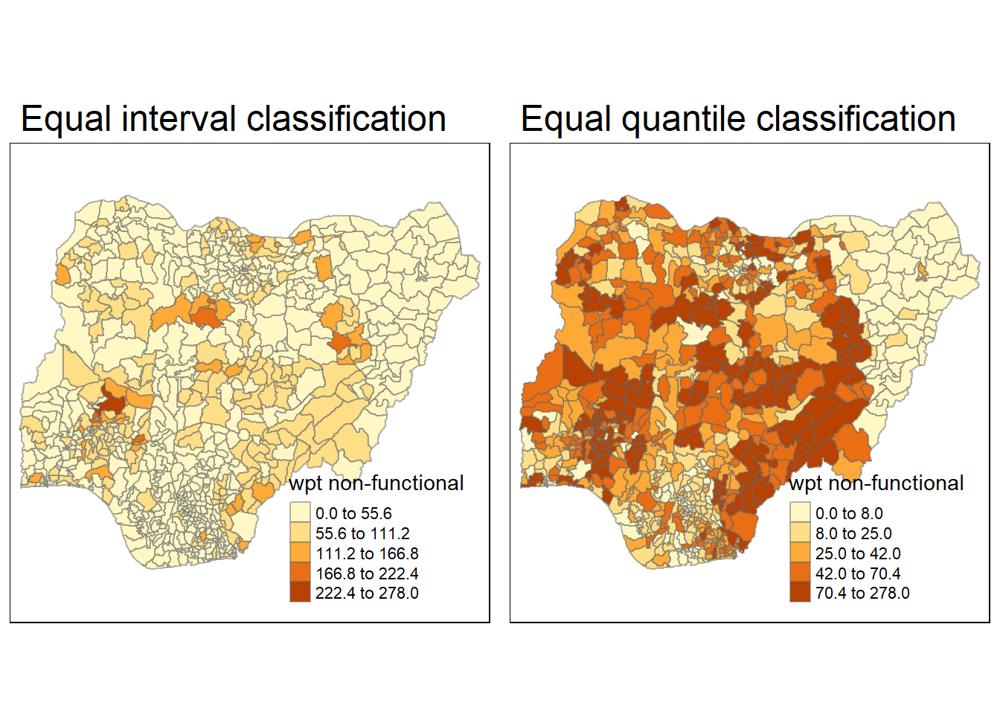

pacman::p_load(sf, tidyverse, tmap, spdep, funModeling)Take-home_Exercise1
Geospatial Analytics for Social Good
Overview
Water is an important resource to mankind. Clean and accessible water is critical to human health. It provides a healthy environment, a sustainable economy, reduces poverty and ensures peace and security. Yet over 40% of the global population does not have access to sufficient clean water. By 2025, 1.8 billion people will be living in countries or regions with absolute water scarcity, according to UN-Water. The lack of water poses a major threat to several sectors, including food security. Agriculture uses about 70% of the world’s accessible freshwater.
Developing countries are most affected by water shortages and poor water quality. Up to 80% of illnesses in the developing world are linked to inadequate water and sanitation. Despite technological advancement, providing clean water to the rural community is still a major development issues in many countries globally, especially countries in the Africa continent.
To address the issue of providing clean and sustainable water supply to the rural community, a global Water Point Data Exchange (WPdx) project has been initiated. The main aim of this initiative is to collect water point related data from rural areas at the water point or small water scheme level and share the data via WPdx Data Repository, a cloud-based data library. What is so special of this project is that data are collected based on WPDx Data Standard.
The Task
The specific tasks of this take-home exercise are as follows:
Using appropriate sf method, import the shapefile into R and save it in a simple feature data frame format. Note that there are three Projected Coordinate Systems of Nigeria, they are: EPSG: 26391, 26392, and 26303. You can use any one of them.
Using appropriate tidyr and dplyr methods, derive the proportion of functional and non-functional water point at LGA level.
Combining the geospatial and aspatial data frame into simple feature data frame.
Performing outliers/clusters analysis by using appropriate local measures of spatial association methods.
Performing hotspot areas analysis by using appropriate local measures of spatial association methods.
Data
Aspatial Data
Water point data exchange WPdx+ data set.
- geoexport
Geospatial data
Nigeria Level-2 Administrative Boundary (also known as Local Government Area) polygon features GIS data
- geoBoundaries-NGA-ADM2
Getting Started
Setting Up working Environment
Install sf, tidyverse, tmap, spdep, funModeling packages of R.
Importing data
Importing water point geospatial data
The chunk below is to import the water point geospatial data (i.e.geo_export) into r environment.
wp <- st_read(dsn = "Data/geoexport",
layer = "geo_export",
crs = 4326) %>%
filter(clean_coun == "Nigeria")Reading layer `geo_export' from data source
`D:\yuetongz\ISSS624\Take-home_Ex\Take-home_Ex1\Data\geoexport'
using driver `ESRI Shapefile'Warning: st_crs<- : replacing crs does not reproject data; use st_transform for
thatSimple feature collection with 406566 features and 72 fields
Geometry type: POINT
Dimension: XY
Bounding box: xmin: -92.05073 ymin: -27.31495 xmax: 92.32694 ymax: 26.65622
Geodetic CRS: WGS 84write_rds() of readr package is used to save the extracted sf data table (i.e. wp) into an output file in rds data format. The output file is called wp_nga.rds and it is saved in geodata sub-folder.
write_rds(wp, "Data/geoexport/wp_nga.rds")Importing shapefile into r environment
The chunk below is to import the LGA boundary data into r environment.
nga <- st_read(dsn = "Data/geoBoundaries-NGA-ADM2",
layer = "geoBoundaries-NGA-ADM2",
crs = 4326)Reading layer `geoBoundaries-NGA-ADM2' from data source
`D:\yuetongz\ISSS624\Take-home_Ex\Take-home_Ex1\Data\geoBoundaries-NGA-ADM2'
using driver `ESRI Shapefile'
Simple feature collection with 774 features and 5 fields
Geometry type: MULTIPOLYGON
Dimension: XY
Bounding box: xmin: 2.668534 ymin: 4.273007 xmax: 14.67882 ymax: 13.89442
Geodetic CRS: WGS 84Data Wranging
Recording NA values into string
In the code chunk below, replace_na() is used to recode all the NA values in status_cle field into Unknown.
wp_nga <- read_rds("Data/geoexport/wp_nga.rds") %>%
mutate(status_cle = replace_na(status_cle, "Unknown"))EDA
The code chunk below is to display the distribution of status_cle field in wp_nga.
freq(data=wp_nga,
input = 'status_cle')Warning: The `<scale>` argument of `guides()` cannot be `FALSE`. Use "none" instead as
of ggplot2 3.3.4.
ℹ The deprecated feature was likely used in the funModeling package.
Please report the issue at <https://github.com/pablo14/funModeling/issues>.
status_cle frequency percentage cumulative_perc
1 Functional 45883 48.29 48.29
2 Non-Functional 29385 30.93 79.22
3 Unknown 10656 11.22 90.44
4 Functional but needs repair 4579 4.82 95.26
5 Non-Functional due to dry season 2403 2.53 97.79
6 Functional but not in use 1686 1.77 99.56
7 Abandoned/Decommissioned 234 0.25 99.81
8 Abandoned 175 0.18 99.99
9 Non functional due to dry season 7 0.01 100.00Extracting Water Point Data
Extracting functional water point
In the code chunk below, use filter() of dplyr to select functional water points.
wpt_functional <- wp_nga %>%
filter(status_cle %in%
c("Functional",
"Functional but not in use",
"Functional but needs repair"))freq(data=wpt_functional,
input = 'status_cle')
status_cle frequency percentage cumulative_perc
1 Functional 45883 87.99 87.99
2 Functional but needs repair 4579 8.78 96.77
3 Functional but not in use 1686 3.23 100.00Extracting non-functional water point
In the code chunk below, use filter() of dplyr to select non-functional water points.
wpt_nonfunctional <- wp_nga %>%
filter(status_cle %in%
c("Abandoned/Decommissioned",
"Abandoned",
"Non-Functional",
"Non functional due to dry season",
"Non-Functional due to dry season"))Performing Point-in-Polygon Count
nga_wp <- nga %>%
mutate(`total wpt` = lengths(
st_intersects(nga, wp_nga))) %>%
mutate(`wpt functional` = lengths(
st_intersects(nga, wpt_functional))) %>%
mutate(`wpt non-functional` = lengths(
st_intersects(nga, wpt_nonfunctional))) Saving the Analytical Data Table
In the code chunk below, mutate() of dplyr package is used to derive two files namely pct_functional and pct_non-functional.
nga_wp <- nga_wp %>%
mutate(pct_functional = `wpt functional`/`total wpt`) %>%
mutate(`pct_non-functional` = `wpt non-functional`/`total wpt`)The code chunk below will save the sf data table into rds format.
write_rds(nga_wp, "Data/nga_wp.rds")nga_wp <- st_transform(nga_wp,26391)Visualising the spatial distribution of water points
In the code chunk below, plotting the spatial distribution of functional and non-functional water points.
nga_wp <- read_rds("Data/nga_wp.rds")
wp_functional <- qtm(nga_wp, "wpt functional")+
tm_layout(legend.height=0.25,
legend.width=0.35)
wp_nonfunctional <- qtm(nga_wp, "wpt non-functional")+
tm_layout(legend.height=0.25,
legend.width=0.35)
tmap_arrange(wp_functional, wp_nonfunctional, asp=1, ncol=2)equal <- tm_shape(nga_wp) +
tm_fill("wpt non-functional",
n = 5,
style = "equal") +
tm_borders(alpha = 0.5) +
tm_layout(main.title = "Equal interval classification")
quantile <- tm_shape(nga_wp) +
tm_fill("wpt non-functional",
n = 5,
style = "quantile") +
tm_borders(alpha = 0.5) +
tm_layout(main.title = "Equal quantile classification")
tmap_arrange(equal,
quantile,
asp=1,
ncol=2)
Computing distance based neighbours
Determine the cut-off distance
determine the upper limit for distance band by using the steps below:
Return a matrix with the indices of points belonging to the set of the k nearest neighbours of each other by using knearneigh() of spdep.
Convert the knn object returned by knearneigh() into a neighbours list of class nb with a list of integer vectors containing neighbour region number ids by using knn2nb().
Return the length of neighbour relationship edges by using nbdists() of spdep. The function returns in the units of the coordinates if the coordinates are projected, in km otherwise.
Remove the list structure of the returned object by using unlist().
coords <- st_centroid(st_geometry(nga_wp))
k1 <- knn2nb(knearneigh(coords))
k1dists <- unlist(nbdists(k1, coords,longlat=NULL))
summary(k1dists) Min. 1st Qu. Median Mean 3rd Qu. Max.
2.675 12.814 20.300 22.075 27.800 72.027 Computing fixed distance weight matirx
The code chunk below will compute the distance weight matrix by using dnearneigh() .
wm_d73 <- dnearneigh(coords, 0, 73)
wm_d73Neighbour list object:
Number of regions: 774
Number of nonzero links: 18472
Percentage nonzero weights: 3.083415
Average number of links: 23.86563 Use str() to display the content of wm_d73 weight matrix.
str(wm_d73)List of 774
$ : int [1:63] 2 5 10 25 55 66 68 103 122 181 ...
$ : int [1:62] 1 5 10 25 55 66 68 103 122 181 ...
$ : int [1:2] 261 447
$ : int [1:10] 12 20 257 263 446 454 466 641 690 695
$ : int [1:56] 1 2 55 66 104 136 137 169 184 202 ...
$ : int [1:21] 9 14 18 19 56 170 217 218 330 337 ...
$ : int [1:20] 8 15 22 49 176 177 214 281 282 283 ...
$ : int [1:32] 7 15 22 49 176 177 214 275 276 277 ...
$ : int [1:27] 6 18 19 56 66 77 103 104 217 218 ...
$ : int [1:64] 1 2 23 25 66 103 181 190 191 203 ...
$ : int [1:23] 26 27 43 68 126 157 190 191 204 336 ...
$ : int [1:11] 4 135 257 263 401 417 429 446 454 690 ...
$ : int [1:13] 31 37 38 40 94 211 320 393 436 471 ...
$ : int [1:24] 6 170 193 194 195 217 309 310 311 362 ...
$ : int [1:27] 7 8 22 32 49 51 62 82 176 177 ...
$ : int [1:38] 30 38 39 41 44 45 70 71 120 124 ...
$ : int [1:34] 28 29 35 72 172 173 178 179 182 275 ...
$ : int [1:30] 6 9 19 56 66 77 103 104 217 218 ...
$ : int [1:42] 6 9 18 25 56 66 77 103 104 181 ...
$ : int [1:7] 4 106 239 263 419 454 466
$ : int [1:9] 60 61 162 269 484 520 578 596 626
$ : int [1:32] 7 8 15 32 49 51 62 82 176 177 ...
$ : int [1:64] 10 25 52 53 54 56 58 77 78 79 ...
$ : int [1:5] 123 476 527 673 761
$ : int [1:68] 1 2 10 19 23 54 56 66 77 103 ...
$ : int [1:30] 11 27 43 68 157 190 191 204 336 370 ...
$ : int [1:24] 11 26 43 68 157 191 204 336 370 371 ...
$ : int [1:43] 17 29 35 70 71 124 172 173 178 179 ...
$ : int [1:45] 17 28 35 70 71 124 172 173 178 179 ...
$ : int [1:30] 16 38 39 40 41 44 45 175 185 186 ...
$ : int [1:13] 13 37 94 158 210 211 212 289 308 561 ...
$ : int [1:28] 15 22 49 51 62 82 177 196 207 214 ...
$ : int [1:29] 47 111 130 142 145 155 166 219 227 233 ...
$ : int [1:11] 42 86 104 136 137 213 375 553 559 733 ...
$ : int [1:34] 17 28 29 72 172 173 178 179 182 275 ...
$ : int [1:8] 50 107 247 408 432 455 681 759
$ : int [1:21] 13 31 38 39 40 41 186 192 197 198 ...
$ : int [1:25] 13 16 30 37 39 40 41 44 186 192 ...
$ : int [1:27] 16 30 37 38 40 41 44 185 186 192 ...
$ : int [1:21] 13 30 37 38 39 41 44 186 192 211 ...
$ : int [1:24] 16 30 37 38 39 40 44 45 186 192 ...
$ : int [1:21] 34 86 136 137 184 202 209 285 286 375 ...
$ : int [1:19] 11 26 27 68 122 126 157 190 191 246 ...
$ : int [1:28] 16 30 38 39 40 41 45 70 175 186 ...
$ : int [1:27] 16 30 41 44 70 175 187 188 192 290 ...
$ : int [1:12] 119 380 387 417 423 429 438 459 521 656 ...
$ : int [1:25] 33 111 127 130 155 166 227 234 238 242 ...
$ : int [1:12] 64 65 74 113 131 265 386 407 428 482 ...
$ : int [1:31] 7 8 15 22 32 51 62 82 176 177 ...
$ : int [1:5] 36 98 107 409 432
$ : int [1:27] 15 22 32 49 62 82 177 207 214 284 ...
$ : int [1:49] 23 53 54 57 58 77 78 79 80 165 ...
$ : int [1:38] 23 52 54 57 58 78 79 80 165 189 ...
$ : int [1:59] 23 25 52 53 56 57 58 77 78 79 ...
$ : int [1:34] 1 2 5 68 122 157 169 184 190 203 ...
$ : int [1:51] 6 9 18 19 23 25 54 66 77 78 ...
$ : int [1:35] 52 53 54 58 78 79 80 165 189 197 ...
$ : int [1:38] 23 52 53 54 57 78 79 165 189 197 ...
$ : int [1:5] 128 129 493 700 748
$ : int [1:14] 21 61 158 269 310 311 561 563 578 589 ...
$ : int [1:11] 21 60 162 268 269 484 578 589 592 596 ...
$ : int [1:28] 15 22 32 49 51 82 177 196 207 214 ...
$ : int [1:5] 384 416 467 765 772
$ : int [1:7] 48 65 74 113 131 265 407
$ : int [1:11] 48 64 74 109 113 265 386 407 683 701 ...
$ : int [1:48] 1 2 5 9 10 18 19 25 56 103 ...
$ : int [1:26] 72 120 124 179 182 304 305 339 346 347 ...
$ : int [1:30] 1 2 11 26 27 43 55 122 157 190 ...
$ : int [1:8] 140 146 248 274 473 500 512 513
$ : int [1:44] 16 28 29 44 45 71 120 124 172 173 ...
$ : int [1:50] 16 28 29 70 120 124 172 173 175 178 ...
$ : int [1:20] 17 35 67 182 348 361 374 378 404 566 ...
$ : int [1:6] 361 374 377 404 665 666
$ : int [1:15] 48 64 65 109 113 116 251 265 672 683 ...
$ : int [1:15] 110 229 255 258 272 373 382 398 422 433 ...
$ : int [1:9] 254 287 427 459 470 547 647 677 751
$ : int [1:59] 9 18 19 23 25 52 54 56 78 79 ...
$ : int [1:52] 23 52 53 54 56 57 58 77 79 80 ...
$ : int [1:57] 23 52 53 54 56 57 58 77 78 80 ...
$ : int [1:41] 23 52 53 54 57 77 78 79 165 189 ...
$ : int [1:20] 99 145 156 227 233 242 255 270 426 449 ...
$ : int [1:21] 15 22 32 49 51 62 177 207 214 297 ...
$ : int [1:7] 132 258 383 414 433 529 767
$ : int [1:3] 148 437 692
$ : int [1:39] 101 105 130 142 145 155 156 219 235 242 ...
$ : int [1:17] 34 42 136 137 184 202 285 286 499 538 ...
$ : int [1:19] 147 149 151 221 226 245 267 399 410 415 ...
$ : int [1:5] 150 489 648 700 714
$ : int [1:12] 100 107 159 260 408 458 463 542 674 676 ...
$ : int 237
$ : int [1:3] 160 271 406
$ : int [1:11] 95 119 390 391 392 423 487 642 656 668 ...
$ : int [1:3] 354 607 665
$ : int [1:7] 13 31 158 436 561 596 709
$ : int [1:10] 92 390 391 392 405 423 469 656 708 770
$ : int [1:17] 97 108 139 167 168 350 389 403 412 420 ...
$ : int [1:14] 96 108 114 139 147 168 389 403 412 420 ...
$ : int [1:5] 50 153 231 432 696
$ : int [1:18] 81 145 154 167 227 233 255 270 426 449 ...
[list output truncated]
- attr(*, "class")= chr "nb"
- attr(*, "region.id")= chr [1:774] "1" "2" "3" "4" ...
- attr(*, "call")= language dnearneigh(x = coords, d1 = 0, d2 = 73)
- attr(*, "dnn")= num [1:2] 0 73
- attr(*, "bounds")= chr [1:2] "GE" "LE"
- attr(*, "nbtype")= chr "distance"
- attr(*, "sym")= logi TRUEn_comp <- n.comp.nb(wm_d73)
n_comp$nc[1] 2table(n_comp$comp.id)
1 2
772 2 Plotting fixed distance weight matirx
The code chunk below plot the distance weight matrix based on fixed distance scheme.
plot(nga_wp$geometry, border="lightgrey")
plot(wm_d73, coords, add=TRUE)
plot(k1, coords, add=TRUE, col="red", length=0.08)
The red lines show the links of 1st nearest neighbours and the black lines show the links of neighbours within the cut-off distance of 73km.
Computing adaptive distance weight matrix
knn6 <- knn2nb(knearneigh(coords, k=6))
knn6Neighbour list object:
Number of regions: 774
Number of nonzero links: 4644
Percentage nonzero weights: 0.7751938
Average number of links: 6
Non-symmetric neighbours liststr(knn6)List of 774
$ : int [1:6] 2 364 548 597 624 721
$ : int [1:6] 1 548 597 624 721 725
$ : int [1:6] 250 261 447 507 509 526
$ : int [1:6] 20 263 446 454 466 690
$ : int [1:6] 203 208 331 334 539 738
$ : int [1:6] 170 217 218 337 379 553
$ : int [1:6] 8 176 214 281 544 555
$ : int [1:6] 7 214 281 306 544 555
$ : int [1:6] 18 19 218 337 576 757
$ : int [1:6] 25 216 325 528 552 632
$ : int [1:6] 26 27 68 191 565 762
$ : int [1:6] 135 263 417 446 690 695
$ : int [1:6] 31 37 393 570 583 584
$ : int [1:6] 170 363 546 577 581 589
$ : int [1:6] 22 49 177 297 306 580
$ : int [1:6] 30 187 296 328 357 360
$ : int [1:6] 35 295 378 460 638 639
$ : int [1:6] 9 19 218 574 576 601
$ : int [1:6] 9 18 103 376 574 576
$ : int [1:6] 4 106 239 419 454 466
$ : int [1:6] 60 61 162 269 520 596
$ : int [1:6] 49 297 326 443 515 623
$ : int [1:6] 54 291 292 537 618 619
$ : int [1:6] 123 476 527 652 673 761
$ : int [1:6] 10 181 216 314 325 552
$ : int [1:6] 11 27 191 336 562 762
$ : int [1:6] 11 26 191 439 663 762
$ : int [1:6] 29 178 299 300 358 369
$ : int [1:6] 173 178 358 378 460 591
$ : int [1:6] 16 39 41 186 192 360
$ : int [1:6] 13 211 289 570 583 584
$ : int [1:6] 51 62 461 462 515 693
$ : int [1:6] 166 227 238 655 743 750
$ : int [1:6] 42 104 136 213 559 757
$ : int [1:6] 17 275 276 277 295 460
$ : int [1:6] 107 247 408 455 681 759
$ : int [1:6] 38 40 570 583 584 629
$ : int [1:6] 39 40 41 186 320 570
$ : int [1:6] 30 38 40 41 186 320
$ : int [1:6] 37 38 39 41 186 570
$ : int [1:6] 30 38 39 40 192 634
$ : int [1:6] 86 136 137 499 613 718
$ : int [1:6] 11 68 157 524 590 645
$ : int [1:6] 45 192 303 328 360 634
$ : int [1:6] 44 290 303 328 360 599
$ : int [1:6] 387 429 438 521 668 742
$ : int [1:6] 33 166 234 238 698 750
$ : int [1:6] 65 113 265 386 482 701
$ : int [1:6] 22 297 326 515 623 693
$ : int [1:6] 36 98 107 409 432 681
$ : int [1:6] 32 62 461 462 623 693
$ : int [1:6] 78 165 293 532 602 636
$ : int [1:6] 52 78 80 165 621 636
$ : int [1:6] 23 79 293 294 532 536
$ : int [1:6] 122 246 333 430 571 605
$ : int [1:6] 77 376 533 576 601 728
$ : int [1:6] 58 199 312 322 621 622
$ : int [1:6] 57 322 323 603 621 622
$ : int [1:6] 88 128 129 493 700 748
$ : int [1:6] 61 563 578 592 596 626
$ : int [1:6] 21 60 269 578 596 626
$ : int [1:6] 32 51 461 462 515 693
$ : int [1:6] 90 384 416 467 765 772
$ : int [1:6] 48 65 74 113 131 407
$ : int [1:6] 48 64 74 113 265 683
$ : int [1:6] 103 104 331 338 351 574
$ : int [1:6] 347 348 566 609 640 694
$ : int [1:6] 43 157 191 549 590 645
$ : int [1:6] 140 146 274 473 500 512
$ : int [1:6] 71 299 341 343 344 610
$ : int [1:6] 173 298 299 343 344 625
$ : int [1:6] 566 567 568 609 638 639
$ : int [1:6] 361 374 377 404 665 666
$ : int [1:6] 65 109 265 683 741 754
$ : int [1:6] 272 398 422 433 485 501
$ : int [1:6] 254 287 427 547 647 677
$ : int [1:6] 56 195 533 534 579 728
$ : int [1:6] 52 79 165 215 532 636
$ : int [1:6] 54 78 165 532 618 636
$ : int [1:6] 52 53 78 165 215 739
$ : int [1:6] 99 145 233 426 689 760
$ : int [1:6] 15 49 51 177 352 580
$ : int [1:6] 132 258 383 414 529 767
$ : int [1:6] 24 148 437 482 673 692
$ : int [1:6] 105 394 654 675 707 712
$ : int [1:6] 42 136 137 499 613 718
$ : int [1:6] 149 151 221 226 399 486
$ : int [1:6] 59 150 489 648 700 714
$ : int [1:6] 260 408 463 542 674 676
$ : int [1:6] 63 163 236 237 384 710
$ : int [1:6] 160 271 406 475 492 525
$ : int [1:6] 119 390 391 392 487 656
$ : int [1:6] 354 402 594 607 665 666
$ : int [1:6] 31 158 436 561 596 709
$ : int [1:6] 390 391 392 405 469 656
$ : int [1:6] 97 139 389 420 451 653
$ : int [1:6] 96 389 420 451 662 773
$ : int [1:6] 50 117 153 231 432 696
$ : int [1:6] 81 145 426 667 760 769
[list output truncated]
- attr(*, "region.id")= chr [1:774] "1" "2" "3" "4" ...
- attr(*, "call")= language knearneigh(x = coords, k = 6)
- attr(*, "sym")= logi FALSE
- attr(*, "type")= chr "knn"
- attr(*, "knn-k")= num 6
- attr(*, "class")= chr "nb"Plotting distance based neighbours
Plotting the weight matrix using the code chunk below.
plot(nga_wp$geometry, border="lightgrey")
plot(knn6, coords, pch = 19, cex = 0.6, add = TRUE, col = "red")In this case, for data in Nigeria, there is a large variation in polygon size. Therefore, I choose fixed distance method to do the analysis below.
Global Spatial Autocorrelation
Row-standerdised weights matrix
In this case, each neighboring polygon will be assigned equal weight (style=“W”)
rswm_q <- nb2listw(wm_d73, style="W", zero.policy = TRUE)
rswm_qCharacteristics of weights list object:
Neighbour list object:
Number of regions: 774
Number of nonzero links: 18472
Percentage nonzero weights: 3.083415
Average number of links: 23.86563
Weights style: W
Weights constants summary:
n nn S0 S1 S2
W 774 599076 774 126.0587 3124.396Global Spatial Autocorrelation: Moran’s I
Moran’s I test
The code chunk below performs Moran’s I statistical testing of functional and non-functional water point using moran.test() of spdep.
moran.test(nga_wp$`wpt non-functional`,
listw=rswm_q,
zero.policy = TRUE,
na.action=na.omit)
Moran I test under randomisation
data: nga_wp$`wpt non-functional`
weights: rswm_q
Moran I statistic standard deviate = 22.681, p-value < 2.2e-16
alternative hypothesis: greater
sample estimates:
Moran I statistic Expectation Variance
0.3243676984 -0.0012936611 0.0002061546 moran.test(nga_wp$`wpt functional`,
listw=rswm_q,
zero.policy = TRUE,
na.action=na.omit)
Moran I test under randomisation
data: nga_wp$`wpt functional`
weights: rswm_q
Moran I statistic standard deviate = 35.635, p-value < 2.2e-16
alternative hypothesis: greater
sample estimates:
Moran I statistic Expectation Variance
0.5059687257 -0.0012936611 0.0002026318 Computing Monte Carlo Moran’s I
The code chunk below performs permutation test for Moran’s I statistic by using moran.mc() of spdep. A total of 1000 simulation will be performed.
set.seed(1234)
mcm= moran.mc(nga_wp$`wpt non-functional`,
listw=rswm_q,
nsim=999,
zero.policy = TRUE,
na.action=na.omit)
mcm
Monte-Carlo simulation of Moran I
data: nga_wp$`wpt non-functional`
weights: rswm_q
number of simulations + 1: 1000
statistic = 0.32437, observed rank = 1000, p-value = 0.001
alternative hypothesis: greaterset.seed(1234)
mcm_f= moran.mc(nga_wp$`wpt functional`,
listw=rswm_q,
nsim=999,
zero.policy = TRUE,
na.action=na.omit)
mcm_f
Monte-Carlo simulation of Moran I
data: nga_wp$`wpt functional`
weights: rswm_q
number of simulations + 1: 1000
statistic = 0.50597, observed rank = 1000, p-value = 0.001
alternative hypothesis: greaterVisualising Monte Carlo Moran’s I
Examine the simulated Moran’s I test statistics in greater detail by plotting the distribution of the statistical values as a histogram by using the code chunk below.
mean(mcm$res[1:999])[1] -0.001777504var(mcm$res[1:999])[1] 0.0001957975summary(mcm$res[1:999]) Min. 1st Qu. Median Mean 3rd Qu. Max.
-0.043495 -0.011990 -0.002201 -0.001778 0.007629 0.040967 hist(mcm$res,
freq=TRUE,
breaks=100,
xlab="Simulated Moran's I")
abline(v=0,
col="red") mean(mcm_f$res[1:999])[1] -0.002163551var(mcm_f$res[1:999])[1] 0.0001877809summary(mcm_f$res[1:999]) Min. 1st Qu. Median Mean 3rd Qu. Max.
-0.040058 -0.011494 -0.003025 -0.002164 0.006522 0.057796 hist(mcm_f$res,
freq=TRUE,
breaks=100,
xlab="Simulated Moran's I")
abline(v=0,
col="red")Cluster and Outlier Analysis
Local Indicators of Spatial Association or LISA are statistics that evaluate the existence of clusters in the spatial arrangement of a given variable.
Comuting local Moran’s I
The localmoran() function of spdep can comput elocal moran’s I. It computes Ii values, given a set of zi values and a listw object providing neighbour weighting information for the polygon associated with the zi values.
The code chunk below are used to compute local moran’s I of functional and non-functioal water point.
fips <- order(nga_wp$shapeName)
localMI <- localmoran(nga_wp$`wpt non-functional`, rswm_q)
head(localMI) Ii E.Ii Var.Ii Z.Ii Pr(z != E(Ii))
1 0.361394136 -9.995243e-04 1.128237e-02 3.4117747 0.0006454144
2 0.074414950 -4.092463e-05 4.705097e-04 3.4325327 0.0005979717
3 1.258199847 -1.627684e-03 6.280738e-01 1.5896655 0.1119102304
4 -0.006652507 -5.427505e-05 4.151689e-03 -0.1024036 0.9184363392
5 0.082615173 -2.590965e-04 3.325093e-03 1.4372021 0.1506605779
6 0.006672593 -1.538445e-07 5.523369e-06 2.8392431 0.0045220690fips <- order(nga_wp$shapeName)
localMI_f <- localmoran(nga_wp$`wpt functional`, rswm_q)
head(localMI_f) Ii E.Ii Var.Ii Z.Ii Pr(z != E(Ii))
1 0.43151603 -7.191834e-04 0.008120236 4.7966255 1.613609e-06
2 0.27475350 -2.904635e-04 0.003338620 4.7601280 1.934703e-06
3 0.69235062 -8.956670e-04 0.345864093 1.1787856 2.384836e-01
4 0.05590525 -3.884365e-04 0.029702941 0.3266329 7.439455e-01
5 0.33277612 -3.884365e-04 0.004984321 4.7190630 2.369335e-06
6 0.05909213 -4.231402e-05 0.001519106 1.5172126 1.292130e-01localmoran() function returns a matrix of values whose columns are:
Ii: the local Moran’s I statistics
E.Ii: the expectation of local moran statistic under the randomisation hypothesis
Var.Ii: the variance of local moran statistic under the randomisation hypothesis
Z.Ii:the standard deviate of local moran statistic
Pr(): the p-value of local moran statistic
nigeria.localMI <- cbind(nga_wp,localMI) %>%
rename(Pr.Ii = Pr.z....E.Ii..)
nigeria.localMI_f <- cbind(nga_wp,localMI_f) %>%
rename(Pr.Ii = Pr.z....E.Ii..)Mapping local Moran’s I values
Using choropleth mapping functions of tmap package to plot the local Moran’s I values by using the code chinks below.
tm_shape(nigeria.localMI) +
tm_fill(col = "Ii",
style = "pretty",
palette = "RdBu",
title = "local moran statistics") +
tm_borders(alpha = 0.5)Variable(s) "Ii" contains positive and negative values, so midpoint is set to 0. Set midpoint = NA to show the full spectrum of the color palette.tm_shape(nigeria.localMI_f) +
tm_fill(col = "Ii",
style = "pretty",
palette = "RdBu",
title = "local moran statistics") +
tm_borders(alpha = 0.5)Variable(s) "Ii" contains positive and negative values, so midpoint is set to 0. Set midpoint = NA to show the full spectrum of the color palette.Mapping local Moran’s I p-values
The choropleth shows there is evidence for both positive and negative Ii values. However, it is useful to consider the p-values for each of these values, as consider above.
The code chunks below produce a choropleth map of Moran’s I p-values by using functions of tmap package.
tm_shape(nigeria.localMI) +
tm_fill(col = "Pr.Ii",
breaks=c(-Inf, 0.001, 0.01, 0.05, 0.1, Inf),
palette="-Blues",
title = "local Moran's I p-values") +
tm_borders(alpha = 0.5)tm_shape(nigeria.localMI_f) +
tm_fill(col = "Pr.Ii",
breaks=c(-Inf, 0.001, 0.01, 0.05, 0.1, Inf),
palette="-Blues",
title = "local Moran's I p-values") +
tm_borders(alpha = 0.5)Creating LISA Cluster Map
Plotting Moran scatterplot
The Moran scatterplot is an illustration of the relationship between the values of the chosen attribute at each location and the average value of the same attribute at neighboring locations.
The code chunk below plots the Moran scatterplot of non-functional and functional water point by using moran.plot() of spdep.
nci <- moran.plot(nga_wp$`wpt non-functional`,rswm_q,
labels=as.character(nga_wp$shapeName),
xlab="non-functional",
ylab="Spatially Lag non-functional")nci_f <- moran.plot(nga_wp$`wpt functional`,rswm_q,
labels=as.character(nga_wp$shapeName),
xlab="functional",
ylab="Spatially Lag functional")
Plotting Moran scatterplot with standardised variable
Use scale() to center and scales the variable. The as.vector() added to the end is to make sure that the data type get out of this is a vector, that map nearly into out dataframe.
Using the code chunk below to plot the Moran scatterplot again.
nga_wp$Z.non_functional <- scale(nga_wp$`wpt non-functional`) %>%
as.vector
nci2 <- moran.plot(nga_wp$Z.non_functional, rswm_q,
labels=as.character(nga_wp$shapeName),
xlab="z-non-functional",
ylab="Spatially Lag z-non-functional")nga_wp$Z.functional <- scale(nga_wp$`wpt functional`) %>%
as.vector
nci2_f <- moran.plot(nga_wp$Z.functional, rswm_q,
labels=as.character(nga_wp$shapeName),
xlab="z-functional",
ylab="Spatially Lag z-functional")Preparing LISA map classes
The code chunks below show the steps to prepare a LISA cluster map.
quadrant <- vector(mode="numeric",length=nrow(localMI))Derives the spatially lagged variable of interest and centers the spatially lagged variable around its mean.
nga_wp$lag_non_func_points <- lag.listw(rswm_q, nga_wp$`wpt non-functional`)
DV <- nga_wp$lag_non_func_points - mean(nga_wp$lag_non_func_points) This is follow by centering the local Moran’s around the mean.
LM_I <- localMI[,1] - mean(localMI[,1]) Set a statistical significance level for the local Moran, 0.05.
signif <- 0.05 The four command lines below define the low-low (1), low-high (2), high-low (3) and high-high (4) categories.
quadrant[DV <0 & LM_I>0] <- 1
quadrant[DV >0 & LM_I<0] <- 2
quadrant[DV <0 & LM_I<0] <- 3
quadrant[DV >0 & LM_I>0] <- 4 Place non-significant Moran in the category 0.
quadrant[localMI[,5]>signif] <- 0Plotting LISA map
The chunks below build the LISA map.
nigeria.localMI$quadrant <- quadrant
colors <- c("#ffffff", "#2c7bb6", "#abd9e9", "#fdae61", "#d7191c")
clusters <- c("insignificant", "low-low", "low-high", "high-low", "high-high")
tm_shape(nigeria.localMI) +
tm_fill(col = "quadrant",
style = "cat",
palette = colors[c(sort(unique(quadrant)))+1],
labels = clusters[c(sort(unique(quadrant)))+1],
popup.vars = c("")) +
tm_view(set.zoom.limits = c(11,17)) +
tm_borders(alpha=0.5)For effective interpretation, it is better to plot both the local Moran’s I values map and its corresponding p-values map next to each other.
The code chunk below will be used to create such visualisation.
nonfunc <- qtm(nga_wp, "wpt non-functional")
nigeria.localMI$quadrant <- quadrant
colors <- c("#ffffff", "#2c7bb6", "#abd9e9", "#fdae61", "#d7191c")
clusters <- c("insignificant", "low-low", "low-high", "high-low", "high-high")
LISAmap <- tm_shape(nigeria.localMI) +
tm_fill(col = "quadrant",
style = "cat",
palette = colors[c(sort(unique(quadrant)))+1],
labels = clusters[c(sort(unique(quadrant)))+1],
popup.vars = c("")) +
tm_view(set.zoom.limits = c(11,17)) +
tm_borders(alpha=0.5)
tmap_arrange(nonfunc, LISAmap,
asp=1, ncol=2)Functional water point is similar to the non-functional water point before.
quadrant_f <- vector(mode="numeric",length=nrow(localMI_f))nga_wp$lag_func_points <- lag.listw(rswm_q, nga_wp$`wpt functional`)
DV_f <- nga_wp$lag_func_points - mean(nga_wp$lag_func_points)LM_I_f <- localMI_f[,1] - mean(localMI_f[,1]) signif <- 0.05 quadrant_f[DV_f <0 & LM_I_f>0] <- 1
quadrant_f[DV_f >0 & LM_I_f<0] <- 2
quadrant_f[DV_f <0 & LM_I_f<0] <- 3
quadrant_f[DV_f >0 & LM_I_f>0] <- 4 quadrant_f[localMI_f[,5]>signif] <- 0nigeria.localMI_f$quadrant_f <- quadrant_f
colors <- c("#ffffff", "#2c7bb6", "#abd9e9", "#fdae61", "#d7191c")
clusters <- c("insignificant", "low-low", "low-high", "high-low", "high-high")
tm_shape(nigeria.localMI_f) +
tm_fill(col = "quadrant_f",
style = "cat",
palette = colors[c(sort(unique(quadrant_f)))+1],
labels = clusters[c(sort(unique(quadrant_f)))+1],
popup.vars = c("")) +
tm_view(set.zoom.limits = c(11,17)) +
tm_borders(alpha=0.5)func <- qtm(nga_wp, "wpt functional")
nigeria.localMI_f$quadrant_f <- quadrant_f
colors <- c("#ffffff", "#2c7bb6", "#abd9e9", "#fdae61", "#d7191c")
clusters <- c("insignificant", "low-low", "low-high", "high-low", "high-high")
LISAmap <- tm_shape(nigeria.localMI_f) +
tm_fill(col = "quadrant_f",
style = "cat",
palette = colors[c(sort(unique(quadrant_f)))+1],
labels = clusters[c(sort(unique(quadrant_f)))+1],
popup.vars = c("")) +
tm_view(set.zoom.limits = c(11,17)) +
tm_borders(alpha=0.5)
tmap_arrange(nonfunc, LISAmap,
asp=1, ncol=2)Hot Spot and Cold Spot Area Analysis
Getis and Ord’s G-Statistics
An alternative spatial statistics to detect spatial anomalies is the Getis and Ord’s G-statistics (Getis and Ord, 1972; Ord and Getis, 1995). It looks at neighbours within a defined proximity to identify where either high or low values clutser spatially. Here, statistically significant hot-spots are recognised as areas of high values where other areas within a neighbourhood range also share high values too.
The analysis consists of three steps:
Deriving spatial weight matrix
Computing Gi statistics
Mapping Gi statistics
Computing Gi statistics
Gi statistics using fixed distance
fips <- order(nga_wp$shapeName)
gi.fixed <- localG(nga_wp$`wpt non-functional`, rswm_q)
gi.fixed [1] -3.4117746649 -3.4325327295 -1.5896654726 0.1024035837 -1.4372020951
[6] 2.8392431096 -1.0229678923 -2.0881598529 0.6893444830 -4.1357148773
[11] -3.5791180194 0.7028327021 1.0557642518 -1.2648020444 -3.1100102991
[16] 4.8720892661 0.7253370351 0.0978860233 -0.8783760301 0.1418378466
[21] -0.4444525907 -2.3288800178 -5.9408386919 0.0490221299 -4.6250101263
[26] -3.4526479798 -3.2842327545 2.6307586789 3.1531206419 3.9017827701
[31] -0.3901172116 -2.0709442943 -0.1348087246 2.5315321685 0.4422415772
[36] 2.8157847314 2.0572944746 2.3429395384 2.1827306253 1.9238345799
[41] 2.2180722162 -0.4425713964 -3.8639919963 4.5357340434 4.3061500016
[46] 2.9608766578 -0.4592012867 1.1746065746 -2.9053756591 2.5973625891
[51] -2.3715234853 -6.0795935334 -4.9426148974 -6.0992499895 -2.1342011261
[56] -2.6990377972 -4.1095164521 -4.2838167990 0.1434597247 -1.4480552039
[61] -0.3664736626 -2.0660238126 1.3560050446 1.1941723552 0.6520255991
[66] -0.8061921033 5.3705428742 -3.9654078235 -2.8742418968 4.4607142525
[71] 5.9817295202 0.4439965698 -0.0717557313 -0.4575912499 1.2805963197
[76] 2.5430378175 -4.1746961885 -6.2844045395 -6.3091804665 -5.4283741978
[81] 1.3284405021 -3.0134148246 -0.9407873376 2.1372905711 -1.7831446348
[86] 0.5351722462 0.7781339095 -0.0991617191 -0.2983694288 1.6845537280
[91] -1.9481984678 2.4106784274 -0.1209884988 -0.0294216102 1.2014584129
[96] 0.5487724545 0.4638236966 -1.0638710829 2.2086577453 0.6860104564
[101] -0.8358802808 3.3934885075 -2.5915246147 0.6033613668 -1.3919152488
[106] 1.4765378386 3.3349825302 1.1376363329 -0.6649376028 0.1865261237
[111] 0.1426549623 -0.2296312591 1.5924606930 -0.4220300892 -2.4843821512
[116] -0.5403453732 2.4425124231 3.1901956500 3.7026209747 5.7708188247
[121] -2.9992528883 -2.8867680713 0.3769508974 5.5230551315 0.0134817433
[126] -1.4642795114 -0.1821964578 0.2019905157 -0.3933126058 -1.0687092481
[131] 1.1862683742 -1.2897330306 2.0774178384 -2.7261489805 1.1595913792
[136] 0.0590529868 0.0415312576 -0.1479027888 0.2286220369 -2.3236097913
[141] 1.8128875616 -1.8465165657 -1.9263347704 -0.1217435299 -0.0231137666
[146] -2.0483697898 -0.4305500309 1.1206769217 2.2828808379 -1.2897776976
[151] 2.4167160591 0.3088772578 -0.1569586843 1.5067812784 -1.3773256327
[156] -0.8586900829 -3.7789524190 -1.1112024354 -1.6603243945 -2.5183861649
[161] 0.0497131757 0.5395983509 2.4584177542 1.7817721289 -5.8940988934
[166] 0.8247093760 1.5708990685 -0.7737526146 -1.8608470741 1.0219485132
[171] 1.8546118600 5.6507070121 4.9899574161 3.8565952505 5.4648235612
[176] -0.6763153032 -2.1820247405 1.2187984175 5.1137113602 -0.8470772734
[181] -4.9652045029 3.4538530153 -2.5660857585 -0.6414252502 4.4082640059
[186] 3.5932572298 3.8543059497 5.2228382133 -5.6296206205 -2.9734659505
[191] -3.8503251289 3.5127403382 -2.5233166014 -3.0838539269 -3.2384084218
[196] -3.3647449812 -2.0595597139 -2.5844113063 -3.6509192707 -1.8036293622
[201] 0.1408500841 -0.5034885869 -2.1577016798 -3.7986404726 -2.7848792901
[206] -2.5102897931 -1.9939528637 -2.3691669213 -0.6405512085 -2.0151263289
[211] -0.9581884502 -0.7245577589 3.5535109431 -2.4820784778 -5.6448791079
[216] -4.0729928180 0.3576511087 0.2927426140 -1.6443111430 0.8302229411
[221] -0.5062515700 -0.1547202287 -2.4843821512 1.0086589118 -2.1770380403
[226] 2.4626146208 0.0440638219 0.1920286012 1.3983932449 -0.8496076016
[231] -0.6691384516 -1.0666074207 1.2022941360 -0.5529326952 -1.7026055381
[236] -1.0324483227 1.1200463362 -0.1443130266 0.4247713032 2.0054718680
[241] -1.8702382558 -1.1521974135 -0.2921554734 -2.7376713400 3.5976949011
[246] -2.8092520279 4.8434048492 -2.7454271030 -1.1267981706 -2.4941996452
[251] -0.2630217751 -2.1970004876 -0.7730147072 0.6798537235 1.5151496822
[256] -0.6888953395 0.8358603199 1.6654804315 -0.4827650151 -0.5433051006
[261] -2.7605516416 -0.8707537202 0.0947302301 -2.0368588754 0.0696307201
[266] -0.6203604939 -2.0804564267 0.3598097208 0.3526946680 1.4896608049
[271] -1.8702382558 0.5811768274 -2.4716075844 -2.7219828700 0.2521141177
[276] 0.2308970539 -0.0140816269 -0.0627380697 -0.1936101468 -3.6269419152
[281] -1.1266733840 -1.2520801657 -0.8054781266 -3.1021011147 -0.2258676440
[286] -0.4264717884 1.5869426397 -0.6633189334 -2.0928087524 3.8059123765
[291] -5.6569152118 -5.4625715870 -5.6895532745 -5.6802907520 0.0422041246
[296] 5.3088751125 -2.6487517374 5.5732738492 4.9030994298 3.7543412120
[301] 4.0741303923 6.6608670387 3.8590463207 4.7695984004 4.5993369945
[306] -2.6462032630 4.3397784922 -2.4054408070 -3.5297609737 -2.5883422949
[311] -2.6853457388 -2.8146863831 -5.5485595954 -4.3460066672 1.3083580350
[316] -0.0008175288 -0.5453801285 -2.1181791992 4.7484630417 2.6229111706
[321] -2.4517495287 -3.3787446115 -3.0290398288 1.6380043965 -4.7481416416
[326] -2.3492073446 -3.3004858380 4.4178197031 4.0780178934 3.5616720390
[331] -1.2136320131 -2.7979941928 -2.0127346069 -1.6483526420 -2.2358982231
[336] -4.1068715055 2.2859434837 -2.7351098754 6.6557659546 1.0903162691
[341] 4.4835629508 6.0629547434 5.7115875050 6.1036461610 -1.0477720725
[346] 6.6228782572 4.9953238917 4.9553092936 0.5368152260 0.9488298206
[351] -0.9741941021 -2.4311349096 1.1565899102 0.3745724752 5.5938914351
[356] 5.5173133268 5.4253031584 2.5885397061 -0.6275540802 4.1838111295
[361] -0.0376241782 -1.4318034953 -1.9849560828 -3.8104000910 -3.7817839487
[366] -5.4245454867 5.8696037200 -4.3460066672 1.6117911279 -2.9183236115
[371] -2.9391365455 -5.5971220572 0.8980569535 0.1080396834 -0.0499350537
[376] -2.9644127980 -0.2612683878 2.5906642146 2.5757689632 2.4522078061
[381] -1.8542483216 0.4788736337 0.3119912756 0.9113252618 -1.0636046195
[386] 1.2128128576 2.3166975797 -2.4409676368 1.3341470252 1.2361156601
[391] 2.1848914329 1.9356540658 1.1829505160 -2.1398569553 1.5986911707
[396] 3.5405748932 4.2315968938 1.4478008085 0.7997941089 -2.4579198656
[401] 1.7729143861 -0.2688161324 1.2789729232 -0.4785272245 0.0824185174
[406] -1.9481984678 1.8474148195 2.0216768147 0.6370561918 -1.0801487314
[411] 1.8849519770 -0.3797295021 -2.1627301474 -0.9568239420 -1.9920247131
[416] 1.8884756825 1.8550481979 0.0768132901 0.6124793401 1.3560776058
[421] 2.3411474563 1.5216483269 2.8604474525 -0.5765991732 1.1856817116
[426] 0.8921599476 1.1411012820 1.0249162410 1.9180931292 -2.4112314372
[431] -0.7116331447 2.1453405077 0.7764458357 -0.6133524723 -0.5199578683
[436] 0.7191868723 -0.0235257009 1.2160499124 -2.9255703572 -2.0225625108
[441] 2.9455769746 0.2363832344 -2.2768267875 0.3466223084 2.9275168613
[446] -0.0662025058 -2.2510480140 -1.8369929284 -0.4676066168 -1.6782098794
[451] -0.0730153467 1.4868205720 -0.3607190675 -0.1726887164 3.5929560597
[456] 2.7346136617 -0.9465537461 -0.4021235544 1.4739417236 1.5028765507
[461] -2.2932985630 -2.2505626380 0.7936258264 2.4032040546 2.3557037349
[466] 0.1826814641 0.1072325498 1.2844732698 -0.9502510783 2.1483035304
[471] 0.2516184985 1.2342409373 -2.0753935530 -2.1519439300 -2.5640880571
[476] -0.2895493962 -2.0222513579 1.9291991379 -2.0461307940 2.0678083993
[481] -2.1018239835 2.2216843179 -0.1526110061 0.6001789493 1.2654796893
[486] -0.8407609199 2.7630963689 1.3973854719 -1.0153143497 0.3214749983
[491] 1.9226274599 -2.5183861649 -0.9777552530 -0.2462903412 1.3294858918
[496] -1.1545484236 -1.5476742545 -5.2094566914 0.0549402737 -2.7882592342
[501] 1.2314091065 3.0942547654 -0.0995929713 -0.5815559983 -1.4312402705
[506] 6.0035680834 -1.5896654726 1.7438033643 -2.7605516416 3.6248484270
[511] 3.0304510536 -2.5504783218 -2.2884473891 -1.2732232426 -2.2721620988
[516] -1.0055415836 0.9226508131 -0.2977351713 -1.3017627523 0.1028146689
[521] 0.7315633286 -4.9418564900 -4.0599839099 -2.8929329559 -2.2510480140
[526] -2.5436200487 0.3260677356 -4.0077436082 0.5743933705 0.7561771796
[531] -5.5263353862 -6.0792929931 -1.7097095914 -3.3303807457 -5.4921528592
[536] -5.7154013402 -5.8927691095 -0.1890005526 -0.7672122492 -0.3646687228
[541] -3.1236269572 -0.9080505828 -5.7248166602 -2.8093014862 3.1510854408
[546] 0.8119571110 1.4081116422 -3.3974158837 -3.7375593552 6.1800423464
[551] -2.1809384405 -3.8748698800 2.5245173587 3.5912450649 -1.6737647875
[556] 1.1545459720 5.6770411199 -3.2853714432 -0.1539058338 5.7139212020
[561] -1.4215986299 -4.1250618121 -2.1372786039 -5.4053629216 -3.3616823833
[566] 3.1846656426 3.3148834211 2.8003655899 3.3780876342 2.1415338074
[571] -2.6715137576 1.1492329032 -5.5189330179 -0.1558526012 -4.9290944942
[576] -1.0570272459 -0.3795130326 -1.1607522581 -5.7341279685 -2.3602028169
[581] 1.7975786222 4.8355416539 1.4302665280 2.1746896852 -5.3869189362
[586] 1.4675795928 -0.2318308926 -2.7751843183 -1.2798894874 -3.2243185582
[591] 3.8133481365 -2.0899943248 5.3597510246 0.3377758326 -0.6590453290
[596] 0.5564706605 -3.6996922635 0.3465158804 4.2475595682 3.9198676182
[601] -0.7367636763 -5.5369703688 -5.3775822346 -1.0188365586 -1.9028377268
[606] -1.0064673530 -0.3045753085 -2.8225903216 2.7788230955 4.6677741396
[611] -5.7372577835 5.2308303261 -0.0459772068 -5.5653175208 -5.4992065538
[616] -5.3342170944 -2.0092720609 -6.2184435395 -5.6940007573 1.4165917345
[621] -4.9839086503 -5.3585676554 -2.1557553440 -3.8679175521 5.7231828185
[626] -0.7006760902 0.1344292632 0.4913428569 1.9668518061 1.0669220785
[631] -4.3830103212 -4.2472903820 -4.1783720284 2.8388141090 4.2206187107
[636] -5.8592562511 -2.7200110069 1.7047991310 -0.0350040630 4.9598342782
[641] -0.9966168170 3.2695447281 -3.3804769565 1.0233101789 -3.3797348722
[646] 0.6090977147 2.9539283043 -1.1786140304 -0.0727091531 -0.8216517560
[651] -2.6810951026 0.2470088329 1.4545758311 -1.9488365342 0.7975424947
[656] 2.4696394873 0.9588467548 0.4554270551 3.1287725372 -0.9497319744
[661] 2.4425891604 -0.2105136963 -3.5070892894 0.8476063553 -0.4188028499
[666] 0.3029372780 2.1839721672 3.2169809372 -2.3517158696 0.6303115465
[671] -2.9774511892 -0.3251973156 0.5816313363 -0.3216700089 -1.8966498040
[676] -2.6167225944 2.1462680474 -0.7007776964 -0.2901563432 -0.5817938080
[681] 3.1848222332 -2.2628381729 -0.1928257328 3.6722042989 -0.6898963477
[686] -0.5214957272 -2.8263574815 -2.0592059271 1.9767736485 1.3356841113
[691] -0.1992862573 2.1555107134 -2.1759945372 3.8196059687 1.3667153170
[696] 1.5606747950 -2.8531652129 0.1258362477 1.6362250633 -1.1755606793
[701] 0.0556083826 -0.6254612030 -1.8245553490 1.7673690255 -1.7099082238
[706] 0.3279568070 -1.8322536644 -0.0847684254 1.2302888089 -0.2537342611
[711] -1.0194530184 -1.3872006677 -0.0896050089 -1.1801300237 -2.3793827109
[716] -4.3938623424 -2.7407326147 -0.0478388318 -3.0988099215 -3.1167461569
[721] -3.4266276696 -1.4743456301 -2.1479977427 2.1607674145 -2.9497681287
[726] -3.3579719453 -3.6200569828 -4.9397806032 -3.6643604569 -3.5016674035
[731] -1.2277114161 -5.5179768303 0.0712972970 -0.1507192365 2.3528477525
[736] 1.8167556955 -2.5958296857 -0.4791719568 -4.1459005818 4.0454927846
[741] -0.8497222111 4.0344838525 -1.3905853881 -1.1087182179 -1.5160448019
[746] -2.6117513854 -2.7085894788 0.0867810375 2.0068356541 -1.4176209554
[751] 0.8049568202 -0.8342620760 -0.2755550651 -0.1319774555 3.8329382654
[756] 3.9433436976 1.4629084755 2.5181371643 2.4671867473 1.7053304279
[761] 1.0618293805 -3.2379131793 -2.9516603752 -3.1601387394 -0.1748859895
[766] -1.2461555271 -0.1547825213 1.4607510095 2.3956916991 3.1096694186
[771] 3.4527292514 -0.9854012267 -1.0503779238 0.1911170626
attr(,"cluster")
[1] Low Low Low Low Low High Low Low High Low Low High Low Low High
[16] High Low High Low High High Low Low High Low Low Low High High High
[31] Low Low Low High High High Low High High High High High Low Low Low
[46] High High High High Low Low Low Low Low Low Low Low Low Low Low
[61] Low Low High Low High Low High Low Low High High Low High Low High
[76] Low Low Low Low Low High High High Low High Low Low Low High High
[91] Low High High High High High High Low High Low Low High Low High High
[106] Low High High High High Low High Low Low Low High Low High High High
[121] Low Low Low High Low Low Low Low Low Low High Low High Low High
[136] Low High Low High Low Low High Low High High Low Low High High Low
[151] Low High Low High High Low Low High Low Low High Low High High Low
[166] Low Low High Low Low High High Low High Low Low Low Low High Low
[181] Low High Low Low High Low High High Low Low Low Low Low Low Low
[196] High Low Low Low Low High High Low Low Low Low Low Low Low Low
[211] Low Low High Low Low Low High High Low Low High Low Low High Low
[226] Low Low Low Low High Low Low High Low High High High Low High High
[241] Low High Low Low High Low Low Low Low Low Low Low Low High High
[256] Low Low Low Low Low Low High High Low High Low Low High Low High
[271] Low High Low Low Low High Low Low Low Low High Low High High Low
[286] Low Low Low Low High Low Low Low Low Low Low Low High High High
[301] High Low High High High Low High Low Low Low Low Low Low Low Low
[316] Low Low Low High High Low Low Low Low Low Low Low High High High
[331] Low High Low Low Low Low High High High Low High Low High High High
[346] Low Low High Low Low Low Low High Low High High Low High Low Low
[361] Low High High Low Low Low High Low High Low Low Low Low Low High
[376] Low High High Low High Low Low Low High Low High High Low Low High
[391] Low High Low Low High High Low Low Low Low High High High High Low
[406] Low High High High Low High Low High Low High High High Low Low High
[421] High Low High Low High High Low Low Low Low Low Low High High High
[436] High High High Low Low High Low Low Low High High Low Low Low High
[451] High High Low High High High High Low High High Low Low Low High Low
[466] Low High Low High High Low Low Low Low Low High Low High Low High
[481] Low High Low Low Low Low High High Low High Low Low High Low High
[496] High Low Low Low Low Low High Low Low High Low Low High Low High
[511] High Low Low Low Low High High Low High High High High Low Low Low
[526] Low High Low Low Low Low Low Low Low Low Low Low High Low High
[541] Low Low Low Low High High High High High High High Low High High Low
[556] High High Low High High Low Low Low Low Low Low High High High Low
[571] Low Low High Low High High High Low Low Low Low High High High Low
[586] High High Low Low Low Low Low High Low Low Low Low High High High
[601] High Low Low Low Low Low Low High Low High Low High Low Low Low
[616] Low High Low Low High Low Low Low Low High Low Low Low Low Low
[631] Low Low Low High High Low Low Low Low High Low High Low High Low
[646] Low High Low Low Low Low High Low Low Low High High High High High
[661] Low Low High High Low High High High Low Low High Low High Low Low
[676] Low High Low High Low High Low Low High Low Low Low Low High Low
[691] High High Low High Low Low Low High High High High Low Low High Low
[706] High Low Low High Low High High High High Low Low Low High Low Low
[721] High Low Low High High High Low Low Low Low Low Low Low Low High
[736] High Low High Low High Low High High Low Low Low Low High High Low
[751] High Low High High High High High High High Low Low Low Low Low High
[766] Low Low High Low Low High High High Low
Levels: Low High
attr(,"gstari")
[1] FALSE
attr(,"call")
localG(x = nga_wp$`wpt non-functional`, listw = rswm_q)
attr(,"class")
[1] "localG"The Gi statistics is represented as a Z-score. Greater values represent a greater intensity of clustering and the direction (positive or negative) indicates high or low clusters.
The code chunk below join the Gi values to their correspoonding nga sf data frame.
nga.gi <- cbind(nga_wp, as.matrix(gi.fixed)) %>%
rename(gstat_fixed = as.matrix.gi.fixed.)Mapping Gi values with fixed distance weights
The code chunk below shows the functions used to map the Gi values derived using fixed distance weight matrix.
nonfunctional <- qtm(nga_wp, "wpt non-functional")
Gimap <-tm_shape(nga.gi) +
tm_fill(col = "gstat_fixed",
style = "pretty",
palette="-RdBu",
title = "local Gi") +
tm_borders(alpha = 0.5)
tmap_arrange(nonfunctional, Gimap, asp=1, ncol=2)Variable(s) "gstat_fixed" contains positive and negative values, so midpoint is set to 0. Set midpoint = NA to show the full spectrum of the color palette.The code chunk below is similar to above to compute Gi statistics of functional water point.
fips <- order(nga_wp$shapeName)
gi.fixed <- localG(nga_wp$`wpt functional`, rswm_q)
gi.fixed [1] -4.7966254522 -4.7601279618 -1.1787855786 -0.3266329350 -4.7190629570
[6] 1.5172125826 -1.2902625599 -1.6957728744 -0.5275756010 -5.1926677252
[11] -2.5768140292 -0.3601941958 -1.1607783047 -1.0489195937 -2.0766533729
[16] -0.2362844119 0.0246896277 -1.1126195623 -2.2623546187 0.6712728448
[21] -1.4675601604 -2.0473725376 -5.3950888060 -0.5801806892 -5.4929098510
[26] -2.8567376486 -2.3984885577 0.0478763050 0.5535660853 -0.6787525045
[31] -1.7890587007 -1.6995303606 7.3163827774 -0.9421175517 -0.3524452176
[36] 0.9684166396 -1.2000002312 -1.2159378112 -1.2501459208 -0.9362691200
[41] -0.9636116372 -2.6592010113 -2.5722455168 -0.2583756597 -0.4694384133
[46] 0.8250480289 5.5804742726 -0.4214748254 -2.4040551476 0.7650021896
[51] -1.8211132507 -5.1090039918 -4.4147715326 -5.4431571392 -3.3832037669
[56] -2.9692479639 -3.9661338556 -4.2265914233 0.5376732860 -2.3733674251
[61] -1.7828723702 -1.6904587176 0.4731886575 0.0208696392 -0.4155319355
[66] -3.1507592969 1.9921627786 -3.3885608618 -2.0358817826 0.5304333444
[71] 0.8478012249 0.4368477214 -0.0677512864 -0.8492178427 11.8265181784
[76] 0.2629417209 -4.0596831089 -5.2074706905 -5.3904200861 -4.5257515196
[81] 7.7943549736 -1.8708889863 4.0384181051 -0.6499338625 3.5822714332
[86] -2.2477653033 1.9593020455 -0.0153451750 -0.4168368232 0.4542875669
[91] -1.4446487628 0.4053727727 -0.5275947946 -1.2724944686 2.3379941564
[96] 3.0594317064 2.5915199084 1.2378365147 6.9799306285 0.0015648515
[101] 3.8067238604 1.3239338716 -3.9259483410 -1.6255698862 4.5306155294
[106] 0.7147433725 1.4089703975 3.6117347852 -1.0689898568 10.4670212271
[111] 6.4044670192 -0.7083882690 -0.2833225720 1.6237969354 -1.4112359085
[116] -1.0194334696 2.6521508336 -0.0266740398 1.2107581109 1.0209983289
[121] -2.9730290289 -3.2328579179 -0.1020731204 1.0719196535 0.4141956646
[126] -1.4407387822 5.5785966612 0.0648536418 0.8952751195 4.9811304574
[131] -0.4115120204 0.3254520066 0.1728474065 -2.7002979604 -0.1127486508
[136] -2.8582505189 -2.8383350275 -0.0316238233 3.1407253802 -1.4231696855
[141] 0.5226474061 4.5083066552 -1.1541239020 0.7047788820 7.2151894684
[146] -1.3227365926 3.8180422410 -0.5862717321 2.7493488976 -1.0628160808
[151] 3.4371936102 -0.2810802885 1.4320067426 3.6249336656 5.1506959097
[156] 5.6919414156 -3.0615222156 -1.9244681930 -1.4333208977 -1.8674603833
[161] 2.0210452565 -1.0790012166 0.3391947576 -0.4476838440 -5.1940880091
[166] 8.3489971233 3.6556844222 2.4015215451 -3.9327115354 0.4878853030
[171] 1.5122732777 0.9384789080 0.8773691069 2.0499586505 0.1621075159
[176] -0.7801691589 -1.7766222910 -0.2773494386 1.1776794896 -1.9794930531
[181] -5.3368647905 0.4587551248 -2.3943803780 -3.7913886590 -0.0113831242
[186] -1.0272134985 -0.2933382817 -0.0186565874 -5.1097953411 -3.8277117925
[191] -3.4336686925 -0.7335877735 -2.2309663458 -2.6976857004 -2.9183590533
[196] -2.3100298177 -2.7365763776 -2.8644610070 -3.4591081584 -2.6629647197
[201] -1.4567141310 -3.4723934458 -4.9843221054 -4.6066509540 -3.1754972201
[206] -2.8673468952 -1.8040871000 -4.7396528121 -4.3144565958 -2.7383495188
[211] -2.3473723136 -2.4743799804 0.7649204110 -2.0686650549 -4.7969673340
[216] -5.3269713615 -0.5339510355 -0.7729890954 4.5575863158 -0.6943897425
[221] 1.2783818074 -0.7561566267 -1.6567652292 -1.0055686620 -0.8961335175
[226] 2.8093320219 8.3546965780 -0.7582999128 11.6813331578 3.9604439704
[231] 1.3950703546 -0.5380489867 9.7509736728 4.4647553585 3.7777619053
[236] -1.0192801162 1.1937591638 7.4211331247 0.6584250190 0.1979560774
[241] -1.1804781368 6.5752050376 2.1186792527 -1.8414384482 3.0250342288
[246] -3.7690472164 1.0483320537 -1.5828242543 -0.8945055784 -1.8286970407
[251] -0.7961211510 -0.9886266610 -0.8581118371 -0.6638937166 12.2938530634
[256] -0.7715500242 -0.5971182538 9.1213347614 1.1198042757 -0.2880019992
[261] -2.0470334925 -1.1723748988 -0.5019669284 4.1111550114 -0.7167069409
[266] 2.3826010036 3.1488032553 0.3623125133 -0.9590507420 5.5063738529
[271] -1.3375525631 11.7488162579 -1.1517688064 -1.7873784695 -0.4701801048
[276] -0.6205841051 -0.6526818395 -0.9576427734 -0.9563581769 -3.4010504293
[281] -0.9677717092 -1.2706822836 -0.8111292332 -2.0585936709 -3.2107848515
[286] -4.1553453048 0.0832334545 -4.2338965348 -2.4171130305 -0.6043056132
[291] -5.3769703111 -5.2771887322 -5.0934629063 -5.0865628691 -0.5430866771
[296] 0.1304962331 -2.0866809569 0.9046056488 0.8681652311 0.1841919076
[301] 0.0616319770 0.9109554128 -0.4272327587 0.7533303054 1.1479026226
[306] -2.1413612861 2.1876969017 -2.7160234263 -3.3104905776 -2.8722429373
[311] -3.1637417446 -2.8847646452 -5.0745998975 -5.2523278498 -1.2102585240
[316] -1.0613496883 -1.3358991790 -1.9371179146 0.0493998100 -0.8310742142
[321] -4.7262003560 -3.5221597134 -3.3226338810 2.8909745032 -5.2932085312
[326] -1.9245171733 -2.4019596343 -0.2430781635 -0.5828868651 1.1238375534
[331] -4.5431796970 -2.2117618149 -4.3002188342 -4.5605320323 -2.4548355213
[336] -4.1433450103 0.5363429836 -4.9419056399 1.4142700273 -1.1713546406
[341] 0.1507243074 0.4557387145 0.7190215401 1.0196879623 -1.0603996353
[346] 2.2550108058 1.3910193287 1.4129720725 -0.0753883388 4.2462278420
[351] -3.9349737563 -1.7493203561 -1.4229391277 -0.0216328007 0.9406788523
[356] 1.3662798588 0.0245784259 0.1209587333 -0.1685630449 -0.4951813724
[361] -0.4576365649 -1.4178056171 -1.6265044551 -5.0379901295 -5.2136758086
[366] -5.5900748939 0.8817634866 -4.8270530491 -0.1734356388 -3.1243558737
[371] -2.9384332642 -5.3157851446 7.0238173841 -0.3728543188 -4.0688259008
[376] -3.5604581467 -0.5238547319 0.3484437677 1.3935250412 2.0863384457
[381] -1.2121733771 10.8380992920 4.3716157654 0.3581111481 4.9094000530
[386] -0.3945112681 1.6991441534 -1.3325392505 2.7787616719 1.3679389275
[391] 1.3209689589 1.5515616880 -1.0485881078 3.8372404994 1.5846916371
[396] 1.1158396971 0.6395248908 11.4705073674 3.4215815899 -1.6182674669
[401] 0.2136360567 -0.4595278225 1.8795924660 -0.7053196158 3.0716881379
[406] -1.4446487628 -0.0786348385 0.0984068634 1.5373951416 2.8040910231
[411] 2.3099259203 3.4630013806 3.9654270655 3.9528111146 3.2019663287
[416] 0.6484812638 0.1328059599 3.5700251688 0.9413521789 2.7114446687
[421] -0.3169055886 11.2339045553 1.6831578593 0.7286906731 2.6517088930
[426] 5.7728703688 0.2271913976 -0.5237654235 0.3006450318 -4.0637158204
[431] 4.1703771692 0.1088584815 10.7248478774 3.0055501773 7.0342175067
[436] -0.4082906446 -0.8408551415 0.8218387167 -2.7243316536 -0.9647313287
[441] 0.9135044982 -0.5434872000 -1.9045114706 2.3946101002 2.9467747731
[446] -0.3525387382 -1.6692209660 4.4434990568 5.6336956822 4.3868817298
[451] 3.0732995604 0.2736219541 3.9313138966 -0.6910965547 0.0173965406
[456] 0.0091685427 -1.3513861418 -0.5692551584 0.1599104231 -0.1244177450
[461] -1.9057514105 -1.9123321280 0.1161341259 1.2900966335 0.9025488636
[466] -0.6692774349 -0.2179577762 1.0912549140 3.2602239199 0.0349509155
[471] -0.8561007855 9.7600661902 -1.3969832440 3.7252547683 -1.4392605198
[476] -0.7522546887 -0.9644923498 3.1330948114 -1.3930751790 12.6257688657
[481] -1.5015150866 -0.4093366875 6.3719030679 -1.0833852909 12.9134471020
[486] 3.2333749338 1.1805396508 3.6713358177 0.4613069893 -0.0938575165
[491] 3.3623438411 -1.8674603833 -0.4131750402 -0.2731748546 2.5620617275
[496] 3.3919493131 -1.2171876444 -5.2805629503 -2.9133231792 -1.9303377200
[501] 12.3829383568 1.6801796222 6.6307635301 0.3767130039 -4.3146937402
[506] 0.6297958310 -1.1787855786 1.4921225209 -2.0470334925 -0.0823374990
[511] 1.6069823359 -1.7283525937 -1.5185903004 3.8464202721 -1.8613367191
[516] -0.4235785663 -0.9063802643 0.5337166673 5.3814731540 -0.6674464075
[521] 0.2729007650 -4.4441804729 -3.7717149532 -2.3800379766 -1.6692209660
[526] -1.4158292734 -0.5219001583 -4.8510167177 6.2116519585 3.9381912855
[531] -5.2669309689 -5.2505438566 -1.7562154642 -2.9680257887 -5.2453388628
[536] -5.1435994653 -5.2865435004 -3.7465772151 -4.4077535614 -3.8541494482
[541] -3.0275827942 -0.4618626295 -5.3950888060 -2.3259510730 0.1332470514
[546] 0.0739928257 0.1417514025 -4.9570223373 -3.8233936894 0.9661708024
[551] -4.8179122951 -5.2116563027 0.7497213166 0.5171083156 -1.9546069017
[556] -1.1465315482 1.5762896436 -2.3647707591 -3.5437391042 1.6888264031
[561] -2.3101263701 -3.9373557426 -2.3164172569 -4.9162396855 -2.8827093551
[566] 1.2369279818 1.2676116605 0.7920793797 1.2052169270 -1.0717377980
[571] -3.5354305357 -1.2624547767 -4.9712667930 -2.3932001028 -4.8510674654
[576] -1.9384840357 -0.2750032386 -1.5354468303 -5.0095545331 -1.6921082895
[581] 0.1471022986 0.4589254860 -0.9281804773 -0.9944997116 -5.2828119822
[586] -1.2221648054 -3.4173729030 -3.0807643965 -1.2812211928 -3.6163030552
[591] 0.7764705960 -2.7786481934 1.3723863912 0.2568358391 -1.4648729202
[596] -1.1382928528 -4.6328803751 -0.6459660700 -0.2548695333 -0.3646539858
[601] -1.5399012651 -5.1573639827 -5.0163402599 -4.0057501092 -3.6333834867
[606] -2.0150604819 -0.0530570218 -3.0581841670 0.8301452580 -0.1461450066
[611] -5.2863744118 1.3675758208 -3.3083021814 -5.1841914378 -5.1648541588
[616] -5.0569149785 -4.5182283752 -5.3953360719 -5.2418018878 -1.0307403545
[621] -4.5838374116 -4.8910784831 -1.8224126673 -4.9128664835 1.0427836553
[626] -1.1079016444 -1.7552224981 -1.5783343198 -1.3346257876 -1.3739063471
[631] -4.9466433051 -5.0343752869 -4.7557515539 -0.7068374559 -0.4264366750
[636] -5.1304877890 -4.2477388025 0.3028252053 0.0003687595 1.4793928399
[641] -0.5808161872 1.9097714565 -3.0446876842 0.3532075175 -3.8291864937
[646] 0.4188242070 0.8988038598 -0.9069615868 0.0289797048 4.3889391520
[651] -2.1345478440 -0.4569142079 3.2941938271 3.5766182720 9.8504811970
[656] 1.6959822984 3.4155939867 5.4245382648 2.5165491200 -0.3379722410
[661] 2.6461703599 1.9979544583 -3.1663892952 0.0223137862 -0.4193927377
[666] -0.0100248384 5.2990171072 1.9032154257 -2.6741590646 0.1305438772
[671] -2.2551361537 -0.8876756592 -0.5635616153 0.0630962910 3.8231656142
[676] -1.7783906728 0.6273324577 -0.2019082842 3.9004108118 -0.3949831756
[681] 0.9425631382 -1.8268926751 -1.1124675954 2.4766432287 -1.2453307113
[686] -1.2473402653 -1.8916624348 -2.1658747012 10.3507870593 -0.3371053640
[691] 3.5984979393 -0.4918227932 -1.9010936119 1.2007099804 -0.4324688984
[696] 2.4973838724 -3.9749311160 5.2218258151 -0.3083202588 -0.3141781615
[701] -0.4732365687 -0.9628881020 4.4066596159 -0.3605874667 -0.6347609591
[706] 12.5329901899 3.9237298333 1.3001149998 -0.4507179654 -0.4184070229
[711] 1.4600556361 4.2135809290 4.1228844600 -0.5218677334 -2.6472260300
[716] -3.8200179087 -3.0832810036 -2.9823575259 -3.2239784705 -3.1835010176
[721] -4.7697911307 -2.4667118546 -4.5821484142 0.0993891485 -4.7006320554
[726] -4.4329969429 -3.5043028177 -4.7091588412 -4.8731113515 -5.0398444506
[731] 5.7149138277 -5.4334369360 -3.8064739392 -3.2489096504 0.2547108713
[736] -0.1088738307 -3.1354888396 -4.2592668661 -3.7484612368 0.6141087047
[741] -1.1576394964 1.1756167430 5.5954393419 1.9872615045 -2.1207421263
[746] -2.6920782681 -2.5401283445 -0.1745335712 0.4882093681 5.0246302389
[751] -0.6416328582 -1.0150830336 0.6957280593 -0.8675314860 0.0334807209
[756] 0.3325918105 -0.3655898009 1.4453159779 0.4228244504 5.8328455618
[761] -0.3828925986 -2.6976429478 -2.0274831884 -2.1018711538 -0.4641089213
[766] -0.4882557282 3.6457138861 8.4330718690 4.8890469072 1.6686729124
[771] 1.9378197377 -0.8555110048 0.6678177155 0.0033164603
attr(,"cluster")
[1] Low Low Low Low Low High Low High High Low Low Low Low Low High
[16] High Low High Low Low Low Low Low Low Low Low Low High High High
[31] Low Low High Low High High Low High High Low High Low Low Low Low
[46] High High Low High High Low Low Low Low Low Low Low Low Low Low
[61] Low Low High Low High Low High Low Low High High Low Low Low High
[76] Low Low Low Low Low High High High High High Low High High High High
[91] Low High High Low Low High High High High Low High Low Low Low High
[106] High High High Low High High Low High High High Low High High High Low
[121] Low Low High High High Low High Low Low High High High High Low Low
[136] Low Low Low High Low Low High Low Low High Low Low Low High Low
[151] Low Low High Low High High Low Low Low Low Low Low High Low Low
[166] High Low High Low High High High High High Low Low Low Low High Low
[181] Low High Low Low High Low Low High Low Low Low Low Low Low Low
[196] High Low Low Low Low Low Low Low Low Low Low Low Low Low Low
[211] Low Low Low Low Low Low High High Low Low High Low Low High Low
[226] Low High Low High High High Low High High High High High High High High
[241] Low High High Low High Low Low Low Low Low Low Low Low Low High
[256] Low Low High Low Low Low Low Low High High High Low Low Low High
[271] Low High Low Low Low High Low Low High Low High Low High Low Low
[286] Low Low Low Low Low Low Low Low Low Low Low Low Low High Low
[301] High Low Low High Low Low High Low Low Low Low Low Low Low Low
[316] Low Low Low Low Low Low Low Low High Low Low Low Low Low Low
[331] Low High Low Low Low Low High Low High Low Low Low Low Low Low
[346] High Low High Low High Low Low Low Low High Low Low Low Low Low
[361] Low High Low Low Low Low High Low Low Low Low Low High Low Low
[376] Low High High High Low Low High Low Low High High High High Low Low
[391] Low Low Low Low High Low High High High Low Low High High High High
[406] Low Low High High High High High High Low Low Low High High Low High
[421] Low High High High High High Low Low Low Low High Low High High High
[436] Low Low Low Low Low High Low Low High Low Low Low Low High High
[451] High High High High Low Low High Low High Low Low Low Low High Low
[466] High High Low High Low Low Low Low High Low Low Low High High High
[481] Low Low High Low High High High High Low Low High Low High Low Low
[496] High Low Low Low Low Low High High High Low Low Low High Low Low
[511] High Low Low High Low Low High Low Low High High Low Low Low Low
[526] Low Low Low High High Low Low Low Low Low Low Low Low Low Low
[541] Low Low Low Low Low High Low Low High High Low Low High High Low
[556] Low High Low Low High Low Low Low Low Low High Low High High Low
[571] Low Low Low Low High High High Low Low Low High High Low Low Low
[586] Low Low Low Low Low High Low High Low Low Low Low Low Low Low
[601] High Low Low Low Low Low Low Low High High Low Low Low Low Low
[616] Low Low Low Low Low Low Low Low Low High Low Low Low Low Low
[631] Low Low Low High Low Low Low Low Low High Low High Low High High
[646] Low High Low High High Low Low Low High High High High High High Low
[661] Low High Low High Low Low Low High Low Low Low Low Low Low Low
[676] Low High High High High High Low Low High Low Low Low Low High Low
[691] High Low Low High Low High Low High High High Low Low Low High Low
[706] High High High High Low High High High Low Low Low Low Low Low Low
[721] Low Low Low Low Low Low Low Low Low Low High Low Low Low Low
[736] High Low Low Low Low Low Low High High Low Low Low High Low High
[751] High Low High Low Low Low High High High High Low Low Low Low High
[766] Low Low High High High High High High Low
Levels: Low High
attr(,"gstari")
[1] FALSE
attr(,"call")
localG(x = nga_wp$`wpt functional`, listw = rswm_q)
attr(,"class")
[1] "localG"nga.gi <- cbind(nga_wp, as.matrix(gi.fixed)) %>%
rename(gstat_fixed = as.matrix.gi.fixed.)functional <- qtm(nga_wp, "wpt functional")
Gimap <-tm_shape(nga.gi) +
tm_fill(col = "gstat_fixed",
style = "pretty",
palette="-RdBu",
title = "local Gi") +
tm_borders(alpha = 0.5)
tmap_arrange(functional, Gimap, asp=1, ncol=2)Variable(s) "gstat_fixed" contains positive and negative values, so midpoint is set to 0. Set midpoint = NA to show the full spectrum of the color palette.Analysis of Gi map result
The result of LISA map and Gi map coincide. The Gi map shows hot spots and cold spots of functional and non-fuctional water point in Nigeria. We can see that for non functional water point, there is a cluster of water point in the center and western of Nigeria, eastern and southern part seems more dispersed. For functional water point, northern part of Nigeria is clustered and southern region is more dispersed.
We can draw an conclusion that the water condition is better in northern region than southern regions. It is necessary to recover the water point in southern regions.
Conclusion
By using the above methods to do geospatial analytics can be more efficient to solve the problems which are affected by spatial factors. Using Moran’s I, plotting LISA map, Gi map can observe the cluster and disperse clearly. To solve the water problem in Nigeria, fixing the non-functional water point in above regions is a significant issue.